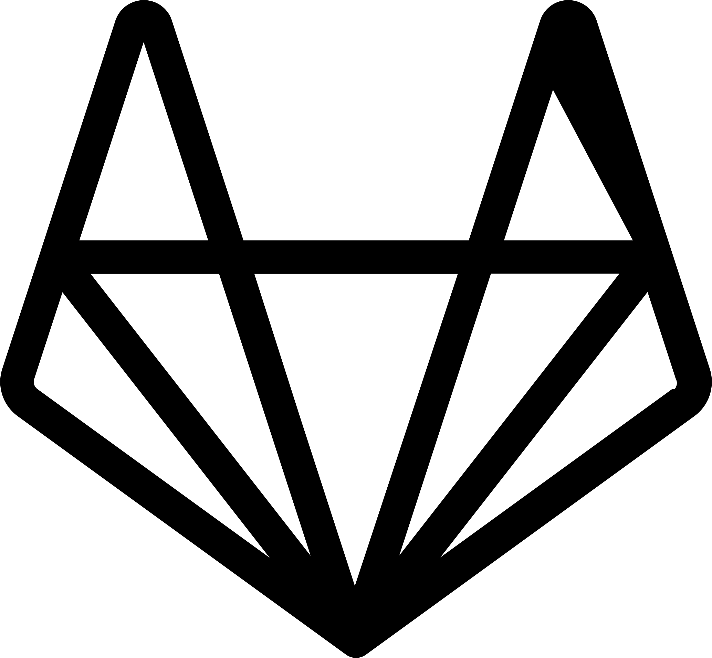
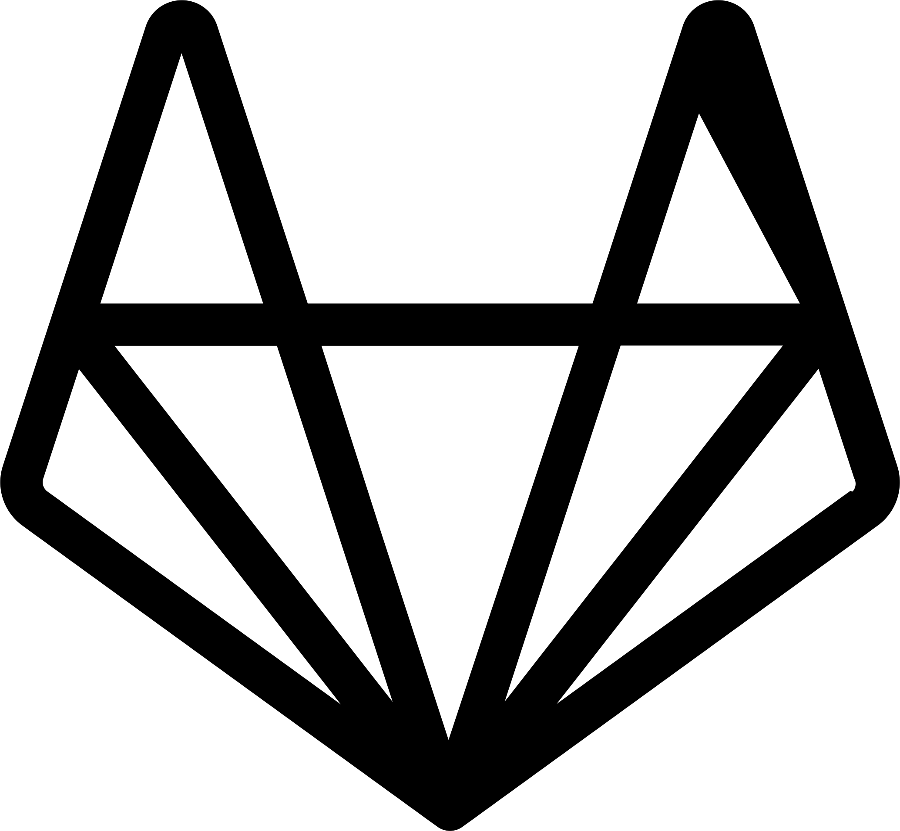

Hii I'm Agilar GUMILAR, a web developer
I am an undergraduate student majoring in Informatics Engineering
at the State Polytechnic of Malang. Currently, I am interning at
PT. PAL Indonesia (Persero) as a web developer, and concurrently,
I am a mentee at Celerates Web Development and UI/UX Design.
I specialize in Laravel back-end development and possess
experience in full-stack tasks. With a proven track record of
diverse projects, I excel in crafting high-quality solutions
tailored to the specific needs of each project. Equipped with
robust skills in both back-end and front-end technologies.
 
